In this project, I implemented rendering for mirror, glass, and microfaceted materials. This was done through modifying the sample methods used to calculate BSDF within each individual material.
Mirror and glass materials are similar in that they both refract/reflect light in a certain way to achieve their appearance. They both use similar light equations to calculate where the next bounce is.
| 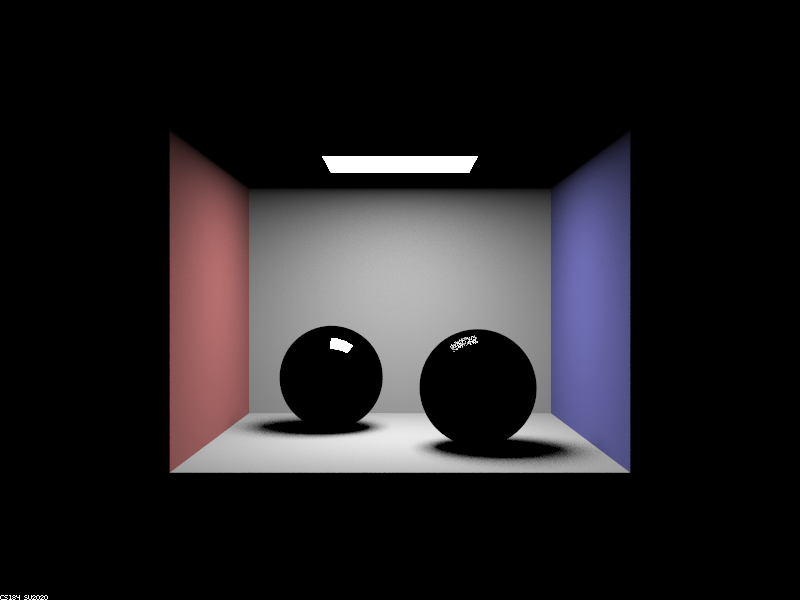 |
| 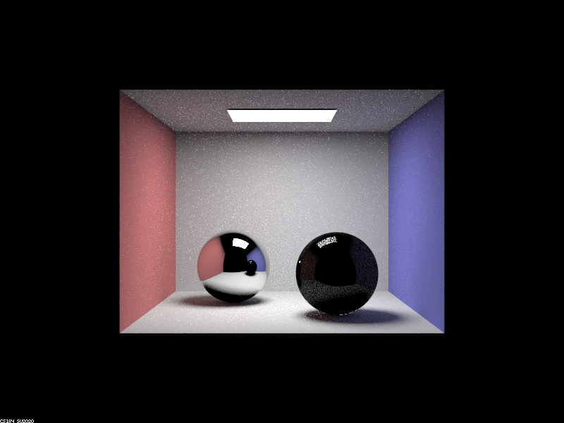 | 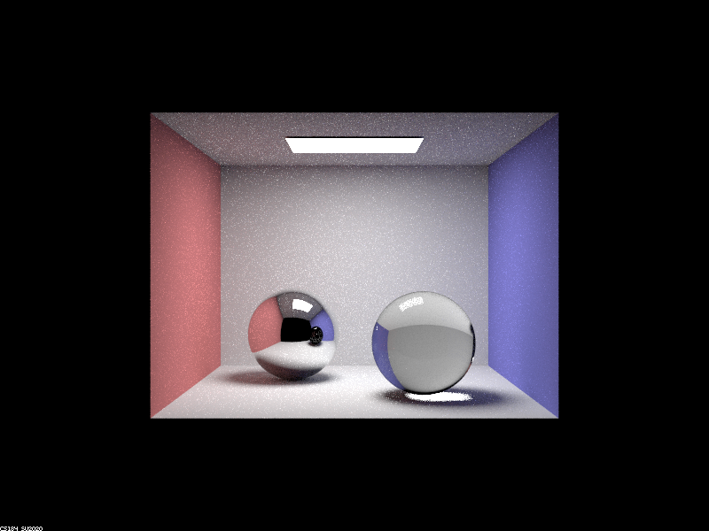 |
| 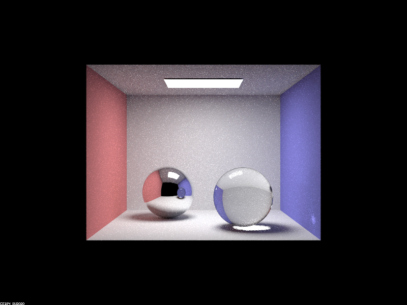 | 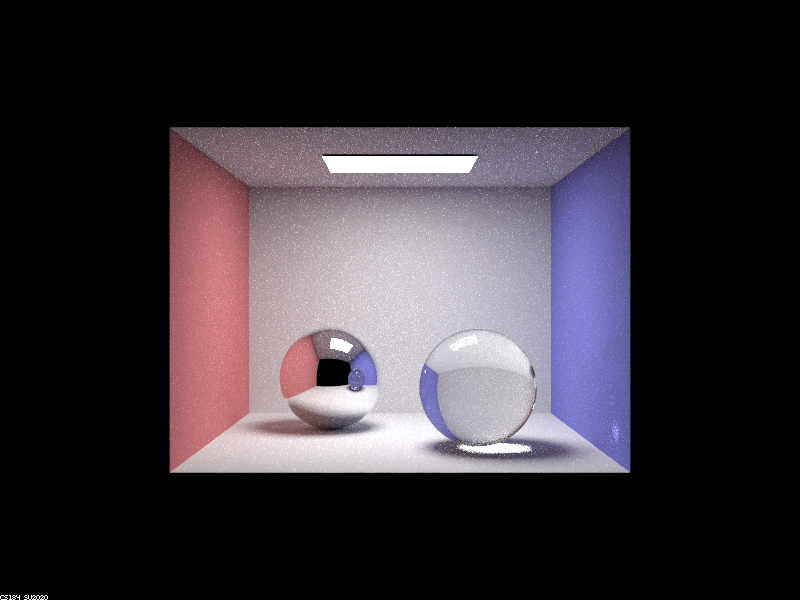 |
| 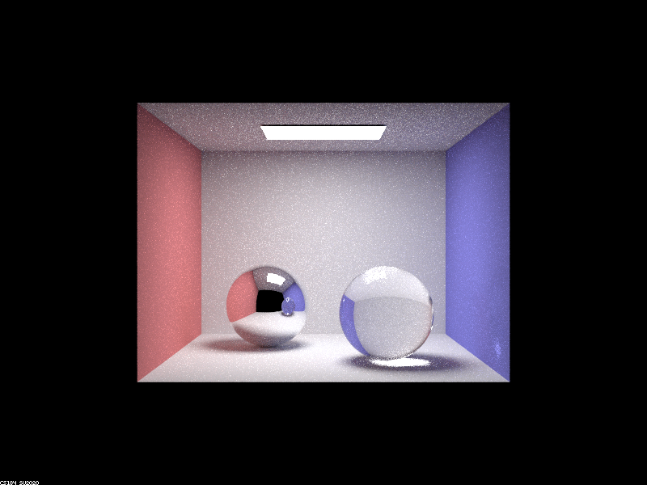 |
At zero bounces, only light sources are visible. At one bounce, surfaces directly impacted by light can be seen. At two bounces, mirroring can be seen a little on the left sphere. Light bounces from the light source towards the camera off of the sphere. The right ball does not receive light directly from the ceiling but instead receives it bounces off the wall, so reflections from it only show up at three bounces. At four bounces, the reflection of the right sphere on the left sphere can now be seen (bouncing off the left and right spheres). The only difference from then on is in increasing the image clarity and global illumination, because there are no more mirror surfaces in view that are not reached at the current bounce level.
In this part, I implemented rendering microfaceted materials. These include materials like gold, silver, and copper. This involved calculating normals and sampling over NDFs.
| 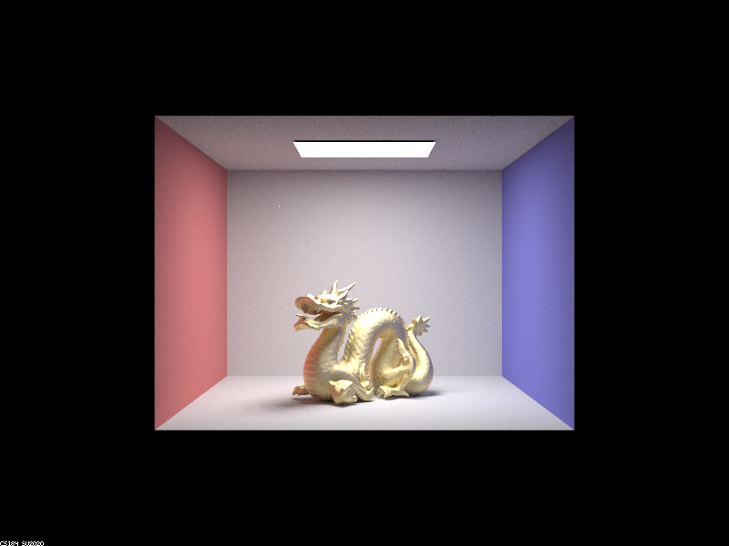 | 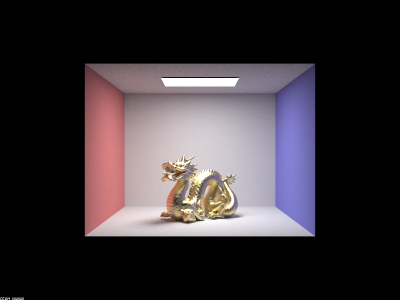 |
| 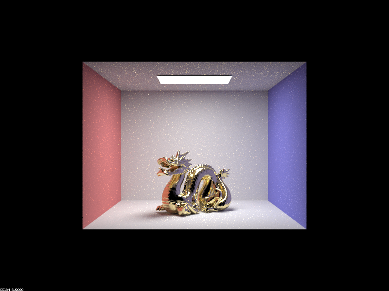 | 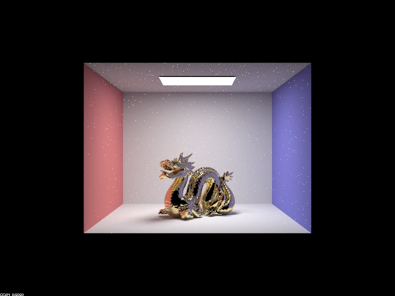 |
As alpha decreases, the surface becomes glossier and glossier. As it increases, it grows more diffuse. This makes sense, because alpha is a measure of the surface's roughness. At .5, the image appears to be completely diffuse. At .25, glossiness begins to be visible at certain parts along the dragon's neck. At .05, glossiness is clearly visible and the dragon looks shiny. At .005, the dragon does not appear to have any diffuse at all, and is completely shiny.
| 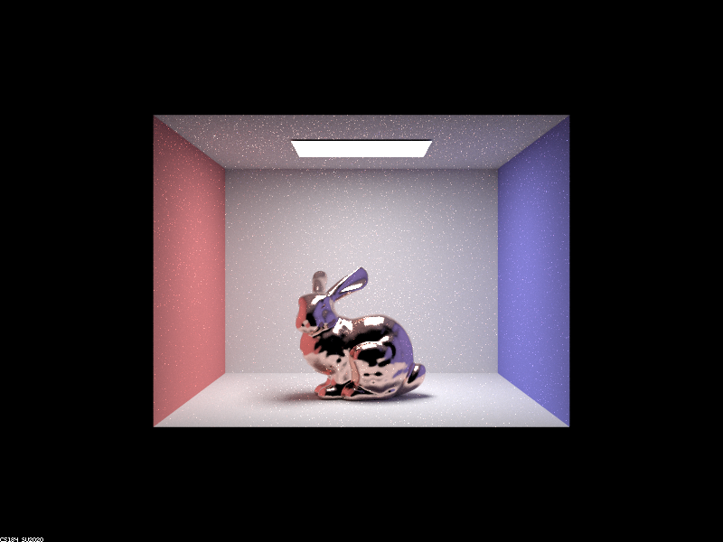 |
Importance sampling clearly converges much faster than hemisphere sampling. The bunny on the left has enough noise that the image cannot be seen clearly, while on the right the image is visible. Both of these were taken with a relatively low sample rate -- if the sample rate were high enough, the differences between the two would be more negligible.
| 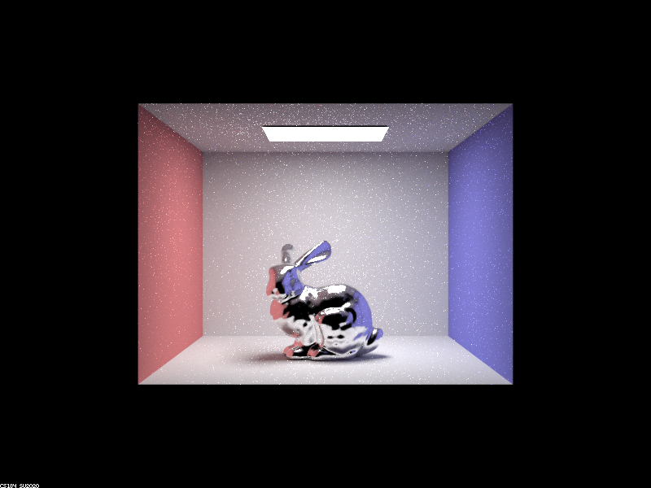 |
All the previous images used a copper bunny. This bunny has the same eta and k-values as silver, giving it a more gray hue.
Website URL: https://cal-cs184-student.github.io/sp22-project-webpages-GalliumCat/